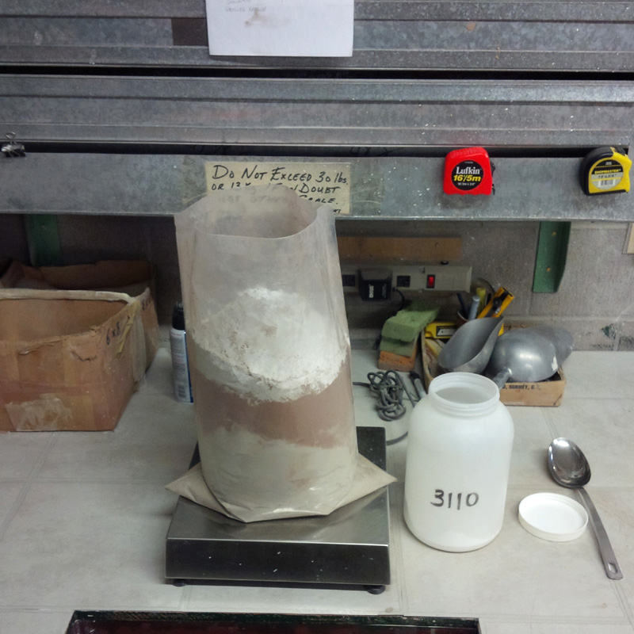
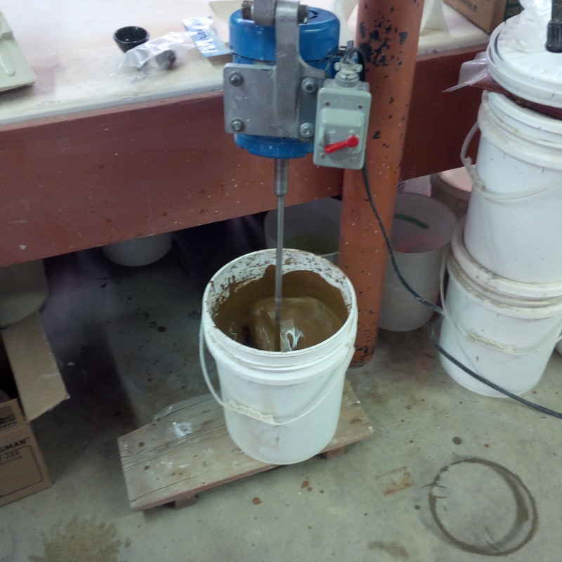
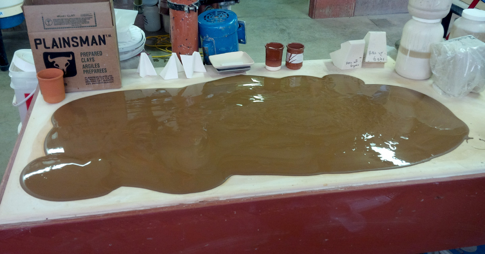
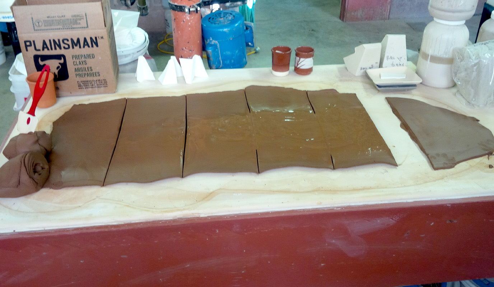
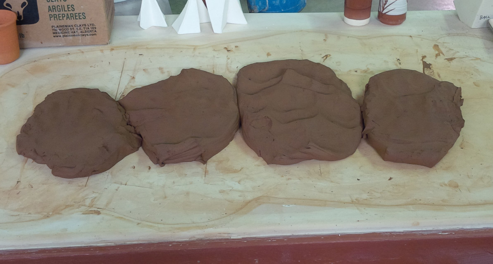
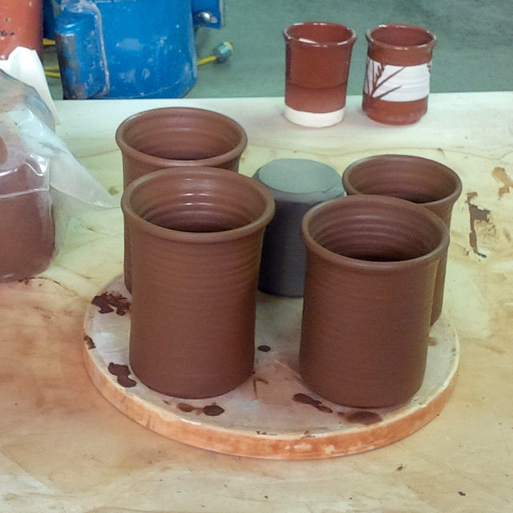
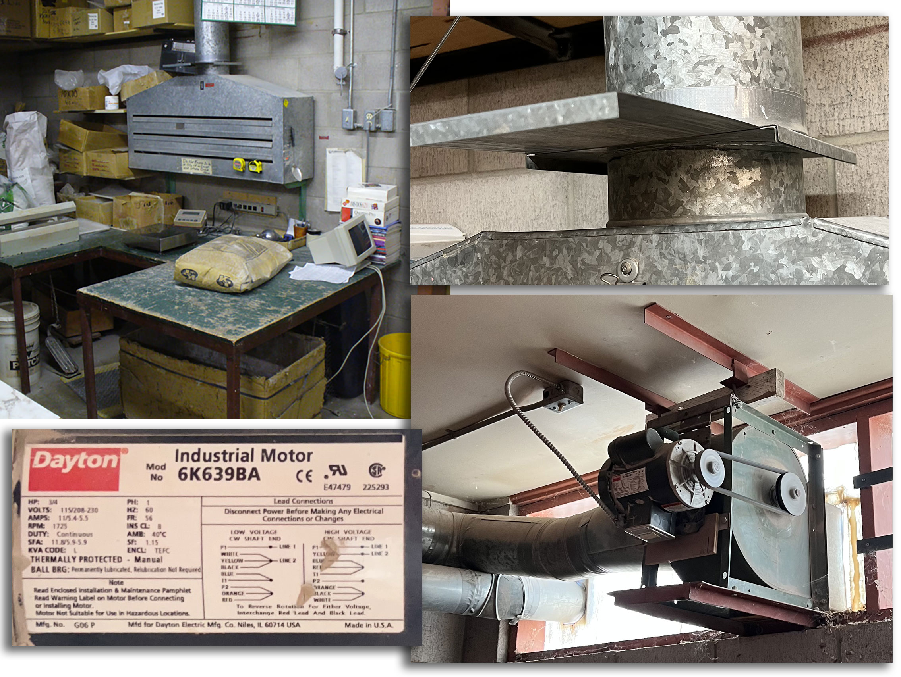
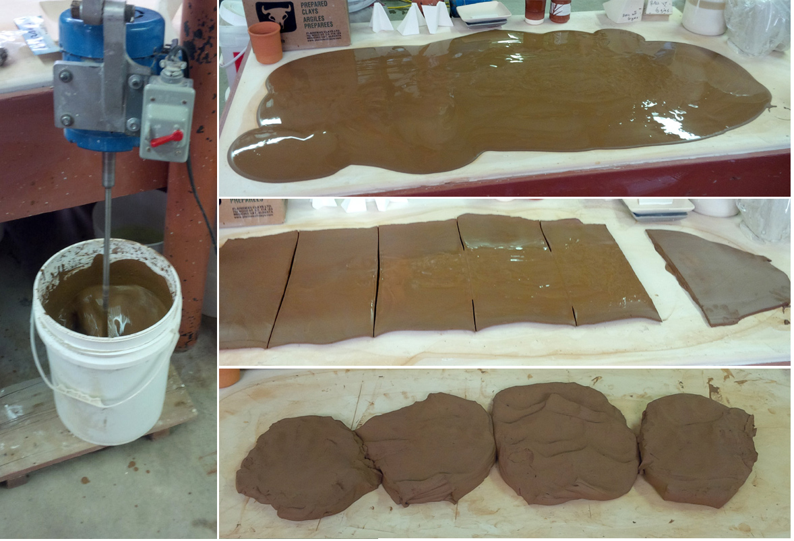

A cereal bowl jigger mold made using 3D printing
Beer Bottle Master Mold via 3D Printing
Better porosity for Brown Sugar Savers
Build a kiln monitoring device
Celebration Project
Coffee Mug Slip Casting Mold via 3D Printing
Comparing the Melt Fluidity of 16 Frits
Cookie Cutting clay with 3D printed cutters
Evaluating a clay's suitability for use in pottery
Make a mold for 4-gallon stackable calciners
Make Your Own Pyrometric Cones
Make your own sieve shaker to process ceramic slurries
Making a high quality ceramic tile
Making a Plaster Table
Making Bricks
Making our own kiln posts using a hand extruder
Medalta Ball Pitcher Slip Casting Mold via 3D Printing
Medalta Jug Master Mold Development
Mold Natches
Mother Nature's Porcelain - Plainsman 3B
Mug Handle Casting
Nursery plant pot mold via 3D printing
Pie-Crust Mug-Making Method
Plainsman 3D, Mother Nature's Porcelain/Stoneware
Project to Document a Shimpo Jiggering Attachment
Roll, Cut, Pull, Attach Handle-making Method
Testing a New Load of EP Kaolin
Using milk as a glaze
Slurry Mixing and Dewatering Your Own Clay Body
The process of propeller-mixing powder into a slurry and then dewatering that slurry on a plaster table is not practical on an industrial scale. But producing a workable plastic body in this way is certainly practical on a hobby or small business scale. The use of a plaster table is especially good for drier climates (where the plaster can dry out naturally). That being said, by incorporating flexible braided tubing (called molduct) and a compressed air fitting into the plaster slab, you can literally blow out the water! A heavy, sturdy and absolutely level plaster table is useful for so many other things in ceramics also. Set up a propeller mixer and a batching table with a dust hood or ventilation and you are good to go.
Is it too much work? No. Too difficult? No. The process is simple. Propeller-mix the powder (and optionally a percentage of scrap) into a slurry in a sufficiently-sized bucket or barrel. If you are using commercial 200 mesh mineral powders there is no need to sieve it, the mixer will make the slurry as smooth as silk. Optionally age it overnight. Then, as needed, ration it out onto the plaster table for dewatering and fine-tuning of the stiffness. Everything from the very finest of porcelains to hyper-plastic and heavily grogged sculpture bodies can be done this same way.
As noted above, DIY clay bodies are best suited for hobbyists or smaller size potteries. Or for specialized products produced at larger operations. And for drier climates. But what about recipes? That is where we can help. This site is full of tutorials on making clay bodies and recipes. If you need pointing in the right direction or a specific recipe, please contact us for help.
Related Information
Weigh out the ingredients

This picture has its own page with more detail, click here to see it.
I have already entered the recipe into my account at insight-live.com, assigned it a code number and printed a mix ticket for the total I want. I have a scale that tares to zero after adding each material. The slotted dust hood sucks the dust away as I add each. When I pour the dust into the water in the pail, a lot of dust is generated and this hood is even more important. Normally I used a big enough bag that I can seal the top and shake the mix together before adding it to the water.
Mix the slurry using a propeller mixer

This picture has its own page with more detail, click here to see it.
Leave it mixing long enough under a mixer to thoroughly wet the surfaces of all the particles.This is a powerful mixer that can put a lot of energy into the slurry and it only takes a few minutes for it to be silky smooth.
Pouring the slurry on a plaster table to dewater it

This picture has its own page with more detail, click here to see it.
Pottery plaster is highly absorbent, it can remove the water from this thick slurry, made from a 5 kg powder mix, in an hour. Slurries of higher water content dewater much quicker, a 1 kg mix can be ready in minutes. This table weighs 400 lbs dry, but smaller ones are equally practical for smaller test batches. Plaster tables are much more practical in arid climates, it is dry here so one this size can supply enough clay for production of a potter. In wetter climates ductwork can be installed within the plaster and air pressure can be used to dewater the table. If you need one of these, photos are linked to our plaster table article.
Peel up and turn over sections when ready

This picture has its own page with more detail, click here to see it.
Using a rubber tool I make cut lines. Even before the center sections are ready I am able to peel them up and turn them over (as has been done on the far right). About half an hour after that it is possible to wedge them.
Mix the whole mass and fine-tune the stiffness

This picture has its own page with more detail, click here to see it.
I combine sections into manageable sized pieces and put them back down to stiffen more. Finally I layer them and repeat a cycle of cutting across the layers and slamming the mass down onto the table each time. Ten cycles of this produces a thousand layers. After a final wedging the clay is ready-to-use, as good as produced in a vacuum de-airing pugmill!
Throw pieces on the potter's wheel

This picture has its own page with more detail, click here to see it.
Throw the clay and feel how smooth and plastic it is!
A practical dust box may be better than a dust hood

This picture has its own page with more detail, click here to see it.
An example of a custom-made dust collection hood in our repackaging and lab recipe mixing area. The slots along the front suck particles into the duct directly away from the operator's face. Suction comes from a centrifugal exhaust fan downstream where the pipe exits the building, it is driven by a 3/4hp motor (these fans are best at sucking, not blowing, so they need to be located at the exit). About 40 feet of 8-inch heating pipe connects from the hood to a fitting that expands to 12 inches going into the fan. The sliding damper above the hood enables stopping all airflow (to prevent heat loss during cold days). Notice it is located above the scale and heat sealer where most dust is generated during weighing and packaging.
DIY clay bodies via slurry mixing:
Consider the advantages.

This picture has its own page with more detail, click here to see it.
Consider the advantages of making your own clay bodies using a propeller mixer and plaster table.
-Independence: You control product availability, quality and consistency.
-Flexibility: You control the recipe (with our help if needed). Fine-tune and adjust it over time to fit your needs and compensate for variations in material properties and supply.
-Special-purpose clay bodies are possible, ones that ceramic suppliers do not or cannot make.
-The slurry up process achieves better mixing and deairing than any pugmill. No aging needed.
-A mixer and plaster table are useful for so many other things in a pottery studio.
-Achieving the right stiffness is an integral part of the process.
-Recycling scrap, by slaking, fits the process.
-Local native clays: Slurries enable the use of a magnet to remove iron, a sieve to remove particulates and a settling process to remove soluble salts.
-Cleanup is easy so many kinds of clay can be made without cross contamination.
-It is rewarding - you will own the whole process, the bragging rights alone make it worthwhile for me!
Links
| Glossary |
Plaster table
Essential in a pottery studio for dewatering reclaim clay, stiffening clay that is too soft or making your own clay bodies. |
| Glossary |
Propeller Mixer
In ceramic studios, labs and classrooms, a good propeller mixer is essential for mixing glaze and body slurries. |
| Glossary |
Slurry Up
The process of slurrying a clay body powder and dewatering it on a plastic slab or table. |
| Articles |
Formulating a body using clays native to your area
Being able to mix your own clay body and glaze from native materials might seem ridiculous, yet Covid-19 taught us about the need for independence. |
| Articles |
How to Find and Test Your Own Native Clays
Some of the key tests needed to really understand what a clay is and what it can be used for can be done with inexpensive equipment and simple procedures. These practical tests can give you a better picture than a data sheet full of numbers. |
 PayPal | No tracking, No ads, No paywall, No transient content! Just organized, concise information constantly updated and improved. Was this helpful? Consider supporting me. |
| By Tony Hansen Follow me on        |  |
Got a Question?
Buy me a coffee and we can talk 

https://digitalfire.com, All Rights Reserved
Privacy Policy